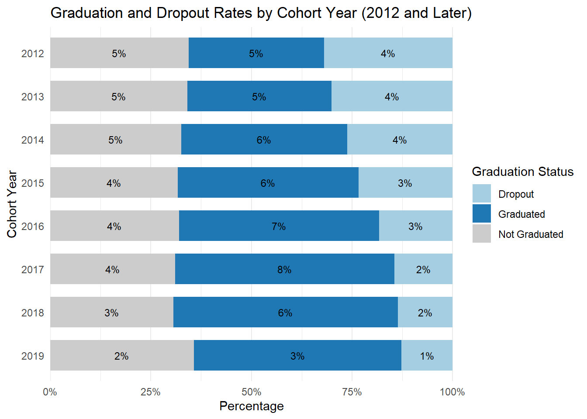
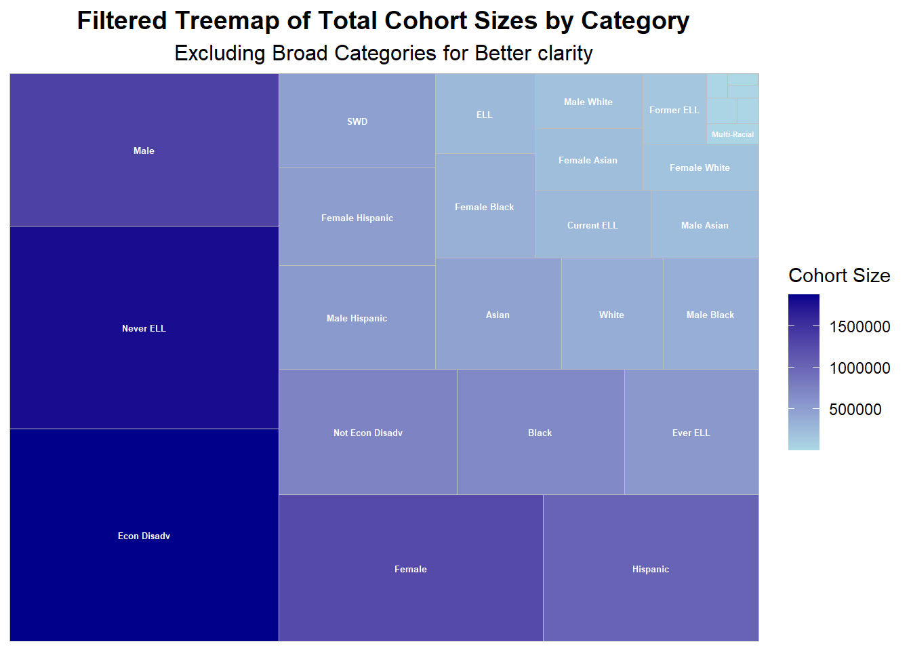
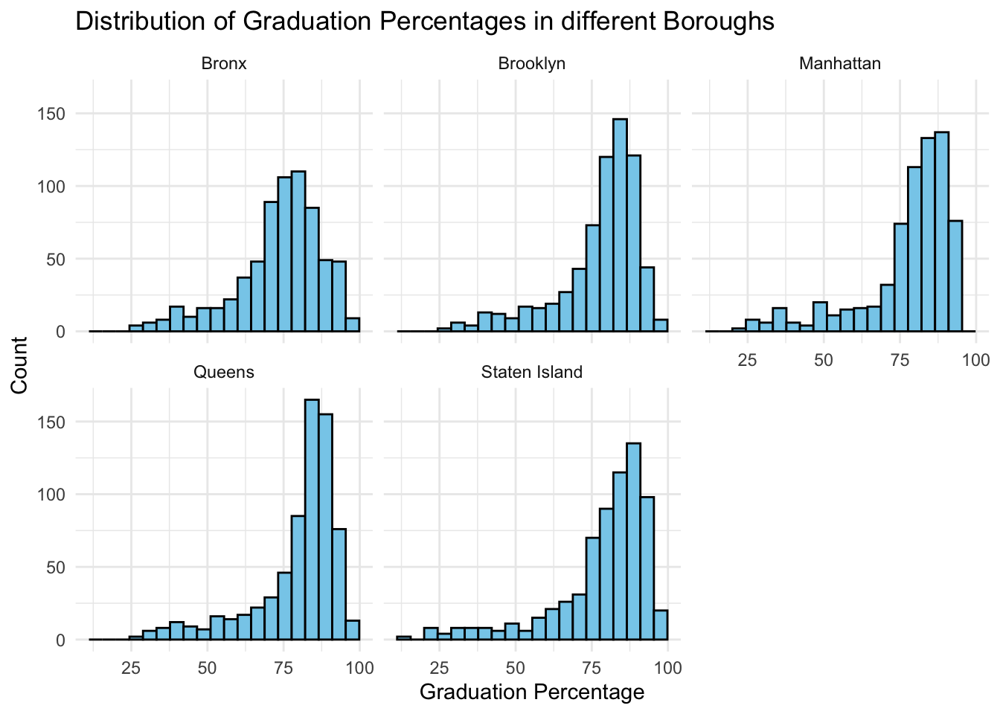
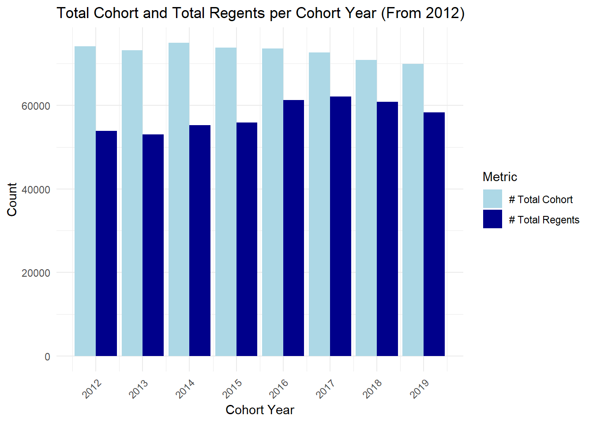
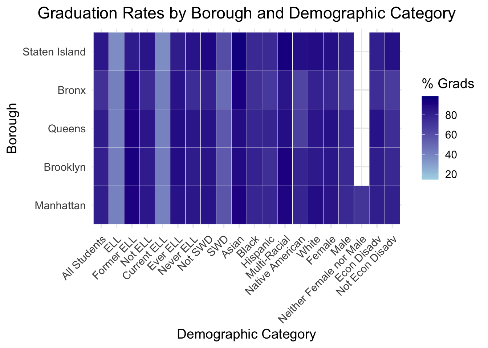
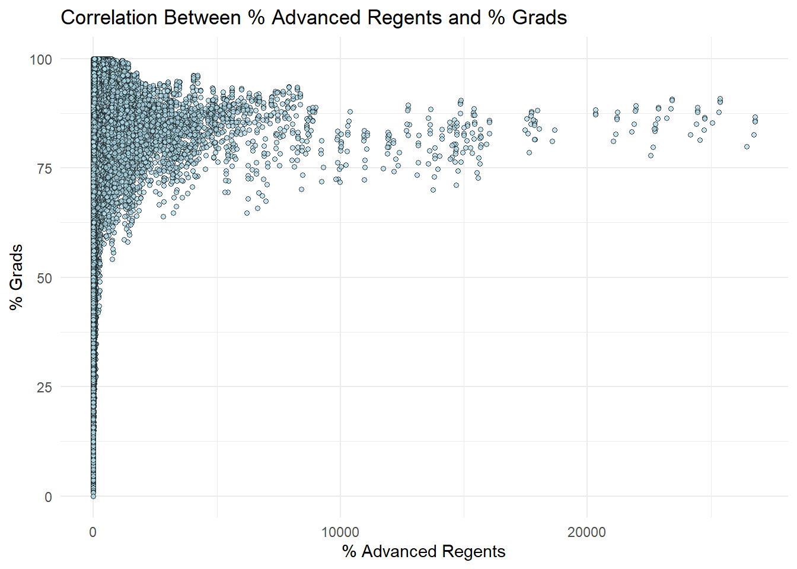
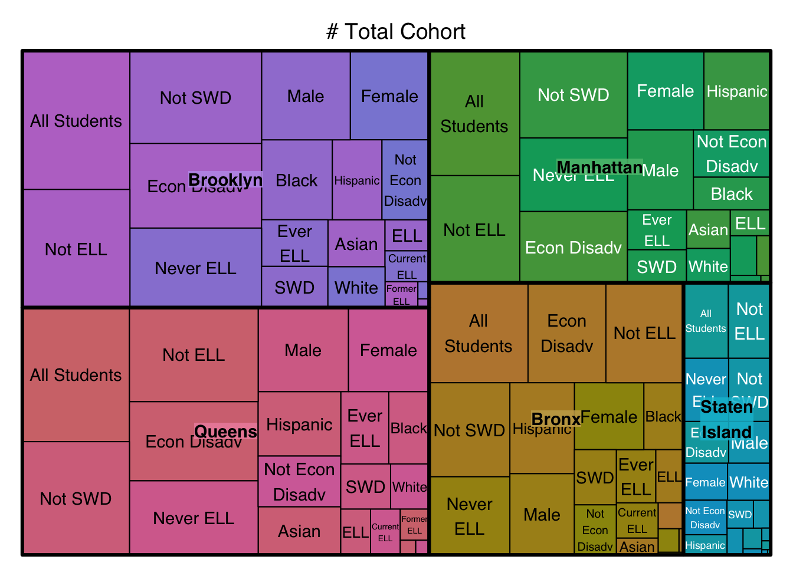

data <-read_csv("Graduate Results.csv", show_col_types =FALSE)
Code
data_clean <- data |>select(-`# SACC (IEP Diploma)`, -`% SACC (IEP Diploma) of Cohort`, -`# TASC (GED)`, -`% TASC (GED) of Cohort`)
Code
# Convert specific columns to numericnumeric_columns <-c("# Total Cohort", "# Grads", "% Grads", "# Total Regents","% Total Regents of Cohort", "% Total Regents of Grads", "# Advanced Regents", "% Advanced Regents of Cohort", "% Advanced Regents of Grads", "# Regents without Advanced","% Regents without Advanced of Cohort", "% Regents without Advanced of Grads", "# Local", "% Local of Cohort", "% Local of Grads", "# Still Enrolled", "% Still Enrolled", "# Dropout", "% Dropout")data_clean[numeric_columns] <-lapply(data_clean[numeric_columns], function(x) as.numeric(as.character(x)))
Code
data_clean_summary <- data_clean %>%group_by(`Cohort Year`) %>%summarise(Count =n()) %>%filter(Count >0) # Filter out years with zero count# Create the bar chartlibrary(ggplot2)ggplot(data_clean_summary, aes(x =as.factor(`Cohort Year`), y = Count)) +geom_bar(stat ="identity", fill ="lightblue") +geom_text(aes(label =ifelse(Count <1000, Count, "")), # Add labels for small valuesvjust =-0.5, size =3, color ="red") +labs(title ="Count of Students by Cohort Year",x ="Cohort Year", y ="Count") +theme_minimal() +theme(axis.text.x =element_text(angle =45, hjust =1)) # Rotate X-axis labels
Bar Chart showing count of Students by cohort year: This graph is shedding light on trends in student populations from 2000 to 2019. A clear pattern emerges, with minimal student counts observed for years before 2012, followed by a sharp and sustained increase beginning in 2012. This marks a significant shift in the dataset’s scope and reliability.
Pre-2012 Data: The student counts from 2000 to 2011 are notably low, represented by red labels to emphasize their sparseness. This is likely due to incomplete or inconsistent data collection processes prior to 2012. These discrepancies in earlier years reflect the dataset’s limitations and necessitated their exclusion during preprocessing to maintain data integrity. Removing pre-2012 data ensures that the analysis focuses on cohorts tracked using a consistent methodology and avoids inaccuracies stemming from incomplete records.
Post-2012 Data: From 2012 onward, there is a marked surge in student counts, which remains steady until 2018. This consistency suggests either improved data tracking systems or an actual increase in 9th-grade enrollments, possibly driven by policy changes, population growth, or enhanced reporting mechanisms. The dataset’s title, “Graduation results for Cohorts 2012 to 2019,” confirms that it is specifically designed to track these later cohorts with detailed and standardized data.
Code
# Histogramggplot(data_clean, aes(x =`% Grads`)) +geom_histogram(binwidth =5, fill ="steelblue", color ="black", alpha =0.7) +labs(title ="Distribution of % Grads",x ="% Grads", y ="Frequency") +theme_minimal()
Distribution of % Grads: This histogram shows the frequency distribution of graduation percentages across the cohort dataset. It reveals that most cohorts have graduation rates concentrated towards higher percentages, with a peak around 100%.
Code
# Cleveland Dot Plotaggregated_data <- data_clean |>group_by(Category) |>summarize(mean_grads =mean(`% Grads`, na.rm =TRUE))# Cleveland dot plot of aggregated dataggplot(aggregated_data, aes(x = mean_grads, y =reorder(Category, mean_grads))) +geom_point(color ="darkblue", size =3) +labs(title ="Average Graduation Rates by Category",x ="Mean % Grads", y ="Category") +theme_minimal()
Average Graduation Rates by Category: This dot plot ranks various demographic and academic categories based on average graduation percentages. Categories such as “Female Asian” and “Neither Female nor Male Multi-Racial” exhibit the highest rates, while “Current ELL” shows the lowest.
Code
top_categories <- data_clean %>%group_by(Category) %>%summarise(median_value =median(`% Advanced Regents of Cohort`, na.rm =TRUE)) %>%arrange(desc(median_value)) %>%slice_head(n =10) %>%# Adjust 'n' to include fewer or more categoriespull(Category)filtered_data <- data_clean %>%filter(Category %in% top_categories)# Ridgeline Plotggplot(filtered_data, aes(x =`% Advanced Regents of Cohort`, y =fct_reorder(Category, `% Advanced Regents of Cohort`, .fun = median), fill = Category)) +geom_density_ridges(scale =2, alpha =0.8) +labs(title ="Distribution of Advanced Regents Percentage by Top Categories",x ="Advanced Regents (% of Cohort)",y ="Category" ) +theme_ridges(center_axis_labels =TRUE) +theme(axis.text.y =element_text(size =10),legend.position ="none" ) +scale_fill_viridis_d()
Picking joint bandwidth of 3.84
Ridgeline plot showing the distribution of percentages of students earning an Advanced Regents diploma across various demographic categories: Here, The demographic categories include combinations of gender and race/ethnicity, such as “Female Asian,” “Male Asian,” “Female White,” and others. Each demographic group is represented by a density curve, showing how the percentages of Advanced Regents diplomas are distributed within that group. The peaks in the curves indicate the most common values for each category, and the groups are ordered by their median percentages, from highest to lowest.
Key observations reveal that “Female Asian” and “Male Asian” categories have higher peaks at higher percentages, suggesting a larger proportion of students in these groups earn Advanced Regents diplomas. Similarly, “Female White” and “Male Multi-Racial” also exhibit relatively high medians, while “Female Native American” appears at the bottom of the plot, indicating lower median percentages. The use of distinct colors for each category and the overlapping ridgelines provide a clear visual comparison of achievements among groups.
This plot offers valuable insights into the disparities and successes in earning Advanced Regents diplomas among different demographic groups, highlighting those with higher achievements. These findings can inform educational policies and support strategies to address the observed disparities.
Code
data_filtered <- data_clean %>%filter(`Cohort Year`>=2012) %>%mutate(Graduation_Status =case_when(`% Grads`>=80~"Graduated",`% Dropout`>=10~"Dropout",TRUE~"Not Graduated" ) )# Group by 'Cohort Year' and 'Graduation Status' and calculate the countsdata_grouped <- data_filtered %>%group_by(`Cohort Year`, Graduation_Status) %>%summarise(count =n(), .groups ='drop')# Create the updated diverging stacked bar chartggplot(data_grouped, aes(x =reorder(`Cohort Year`, desc(`Cohort Year`)), y = count, fill = Graduation_Status)) +geom_bar(stat ="identity", position ="fill", width =0.7) +scale_y_continuous(labels = scales::percent_format(), expand =c(0, 0)) +coord_flip() +labs(title ="Graduation and Dropout Rates by Cohort Year (2012 and Later)",x ="Cohort Year",y ="Percentage",fill ="Graduation Status" ) +scale_fill_manual(values =c("Graduated"="#1f78b4", "Dropout"="#a6cee3", "Not Graduated"="#cccccc")) +geom_text(aes(label = scales::percent(count /sum(count), accuracy =1)), position =position_fill(vjust =0.5), size =3) +theme_minimal() +theme(axis.text.x =element_text(angle =0, hjust =0.5),axis.ticks.y =element_blank(),panel.grid.major.y =element_blank(),panel.grid.minor.y =element_blank() )

Diverging Stacked Bar Chart of Graduation Status by Cohort Year: This visualization illustrates the breakdown of graduation statuses (Graduated, Not Graduated, Dropout) over cohort years, showing an increasing trend in graduation rates for recent years.
# Load dataset# Replace 'data' with your dataset containing graduation rates and borough informationdata_b <-tibble(Borough =c("Manhattan", "Staten Island", "Queens", "Brooklyn", "Bronx"),GradRate =c(85.3, 82.5, 83.7, 81.2, 77.5))# Map borough names to match shapefiledata_b <- data_b %>%mutate(NAME =case_when( Borough =="Manhattan"~"New York", Borough =="Staten Island"~"Richmond", Borough =="Brooklyn"~"Kings",TRUE~ Borough ) )# Merge shapefile and datanyc_boroughs <- nyc_boroughs %>%left_join(data_b, by ="NAME")# Plot the choropleth with labels and sequential blue color schemeggplot(nyc_boroughs) +geom_sf(aes(fill = GradRate), color ="black") +geom_sf_text(aes(label = Borough), size =4, color ="black") +scale_fill_distiller(palette ="Blues", direction =1, name ="Grad Rate (%)") +labs(title ="NYC Borough-Wise Graduation Rates",subtitle ="Filtered for Accurate Boroughs with Proper Labels",caption ="Data Source: NYC Graduation Rates Dataset" ) +theme_minimal() +theme(plot.title =element_text(size =16, face ="bold"),plot.subtitle =element_text(size =12),legend.position ="bottom" )
Graduation Rates by Borough and Demographic Category: This heatmap compares graduation rates across boroughs and demographic categories, with darker shades indicating higher graduation percentages. Staten Island consistently demonstrates high graduation rates across most categories, while the Bronx shows relatively lower rates.
Code
# Preprocessing: Filter out "All Students" and other broad categoriesfiltered_treemap_data <- data_clean%>%filter(`Report Category`=="Citywide",!`Category`%in%c("All Students", "Not SWD", "Not ELL") ) %>%mutate(`# Total Cohort`=as.numeric(`# Total Cohort`)) %>%group_by(`Category`) %>%summarise(Total_Cohort =sum(`# Total Cohort`, na.rm =TRUE)) %>%arrange(desc(Total_Cohort))# Treemap with filtered dataggplot(filtered_treemap_data, aes(area = Total_Cohort, fill = Total_Cohort, label = Category)) +geom_treemap() +geom_treemap_text(fontface ="bold", colour ="white", place ="centre", size =5 ) +scale_fill_gradient(low ="lightblue", high ="darkblue", name ="Cohort Size") +labs(title ="Filtered Treemap of Total Cohort Sizes by Category",subtitle ="Excluding Broad Categories for Better clarity" ) +theme_minimal() +theme(plot.title =element_text(size =14, face ="bold", hjust =0.5),plot.subtitle =element_text(size =12, hjust =0.5),legend.position ="bottom" )

Filtered Treemap of Total Cohort Sizes by Category: This treemap displays the total cohort sizes by demographic and academic categories, with larger blocks representing larger cohort sizes. Categories like “Male” and “Never ELL” dominate the cohort composition.
Code
# Preprocessingstacked_data <- data_clean %>%filter(`Report Category`=="Citywide") %>%mutate(`# Advanced Regents`=as.numeric(`# Advanced Regents`),`# Local`=as.numeric(`# Local`),`# Grads`=as.numeric(`# Grads`) ) %>%group_by(`Cohort Year`) %>%summarise(Advanced_Regents =sum(`# Advanced Regents`, na.rm =TRUE),Local =sum(`# Local`, na.rm =TRUE),Total_Grads =sum(`# Grads`, na.rm =TRUE) ) %>%mutate(Advanced_Regents_Perc = Advanced_Regents / Total_Grads *100,Local_Perc = Local / Total_Grads *100 )# Reshape for plottingstacked_data_long <- stacked_data %>%pivot_longer(cols =c(Advanced_Regents_Perc, Local_Perc), names_to ="Diploma Type", values_to ="Percentage")# Plot with adjusted scale and new color schemeggplot(stacked_data_long, aes(x =factor(`Cohort Year`), y = Percentage, fill =`Diploma Type`)) +geom_bar(stat ="identity", position ="stack") +scale_fill_manual(values =c("Advanced_Regents_Perc"="lightblue", "Local_Perc"="blue"),labels =c("Advanced Regents", "Local") ) +labs(title ="Distribution of Diploma Types Over Time",subtitle ="Focusing on Lower Percentage Bars",x ="Cohort Year",y ="Percentage of Graduates",fill ="Diploma Type" ) +coord_cartesian(ylim =c(0, 50)) +# Adjust scale to focus on lower barstheme_minimal() +theme(plot.title =element_text(size =14, face ="bold", hjust =0.5),plot.subtitle =element_text(size =12, hjust =0.5),legend.position ="right",legend.title =element_text(size =12, face ="bold"),legend.text =element_text(size =10),axis.text.x =element_text(angle =45, hjust =1) )
Distribution of Diploma Types Over Time: The stacked bar chart with a log-transformed y-axis shows the proportions of Advanced Regents and Local diploma types across cohort years, indicating an increasing trend in Advanced Regents diplomas over time.
Distribution of Diploma Types Over Time: The stacked bar chart with a log-transformed y-axis shows the proportions of Advanced Regents and Local diploma types across cohort years, indicating an increasing trend in Advanced Regents diplomas over time.
Distribution of Graduation Percentages in Different Boroughs: Faceted histograms provide a detailed look at the distribution of graduation rates within each NYC borough, revealing that Staten Island and Queens have the most right-skewed distributions, indicating higher rates overall.
Code
data_borough <- data_clean |>filter(`Report Category`=="Borough")ggplot(data_borough, aes(x =`% Grads`)) +geom_histogram(bins =20, fill ="skyblue", color ="black") +theme_minimal() +labs(title ="Distribution of Graduation Percentages in different Boroughs", x ="Graduation Percentage", y ="Count")+facet_wrap(~`Geographic Subdivision`)

Distribution of Graduation Percentages in Different Boroughs: Faceted histograms provide a detailed look at the distribution of graduation rates within each NYC borough, revealing that Staten Island and Queens have the most right-skewed distributions, indicating higher rates overall.
Code
filtered_data <- data_clean %>%filter(Category =="All Students", `Report Category`=="School") %>%group_by(Cohort) %>%# Group by cohort firstslice_max(`# Dropout`, n =10) %>%# Get the top 10 schools for each cohortungroup()ggplot(filtered_data, aes(x =`# Dropout`, y =reorder(`School Name`, `# Dropout`))) +geom_point(size =4, shape =21, fill ="lightblue", color ="black", stroke =1) +facet_wrap(~ Cohort, ncol =1, scales ="free_y") +# Facet by cohortlabs(title ="Top 10 Schools by Dropout Rate Faceted by Cohort",x ="Number of Dropouts",y ="School") +theme_minimal() +theme(strip.text =element_text(face ="bold"), # Bold facet labelsaxis.text.y =element_text(size =5), # Adjust y-axis text sizeaxis.text.x =element_text(size =9)) # Adjust x-axis text size
Top 10 Schools by Dropout Rate Faceted by Cohort: The scatter plot shows dropout counts for the top 10 schools across different cohort time frames, highlighting schools with consistently high dropout numbers over the years.
Code
ggplot(data_clean[data_clean$`Cohort Year`>=2012, ], aes(x =`Cohort Year`)) +geom_bar(aes(y =`# Total Cohort`), stat ="identity", fill ="lightblue", position ="dodge") +geom_bar(aes(y =`# Total Regents`), stat ="identity", fill ="darkblue", alpha =0.5, position ="dodge") +scale_x_continuous(breaks =seq(2012, 2020, 1)) +# Adjust to include all desired yearstheme_minimal() +labs(title ="Total Cohort and Total Regents per Cohort Year (From 2012)", x ="Cohort Year", y ="Count") +theme(axis.text.x =element_text(angle =45, hjust =1))

Code
# Filter dataset for borough-level databorough_data <- data_clean %>%filter(`Geographic Subdivision`%in%c("Manhattan", "Brooklyn", "Queens", "Bronx", "Staten Island") &!is.na(`% Grads`))borough_data$`Geographic Subdivision`<-factor(borough_data$`Geographic Subdivision`, levels =c("Manhattan", "Brooklyn", "Queens", "Bronx", "Staten Island"))borough_data$Category <-factor(borough_data$Category, levels =unique(borough_data$Category))ggplot(borough_data, aes(x = Category, y =`Geographic Subdivision`, fill =`% Grads`)) +geom_tile(color ="white") +# Add white grid lines for clarityscale_fill_gradient(low ="lightblue", high ="darkblue", name ="% Grads") +labs(title ="Graduation Rates by Borough and Demographic Category",x ="Demographic Category",y ="Borough" ) +theme_minimal(base_size =14) +theme(axis.text.x =element_text(angle =45, hjust =1),plot.title =element_text(hjust =0.5))

Graduation Rates by Borough and Demographic Category: This heatmap compares graduation rates across boroughs and demographic categories, with darker shades indicating higher graduation percentages. Staten Island consistently demonstrates high graduation rates across most categories, while the Bronx shows relatively lower rates.
Code
ggplot(data_clean, aes(x =`# Advanced Regents`, y =`% Grads`)) +geom_point(aes(color =`Cohort Year`), alpha =0.7) +theme_minimal() +labs(title ="Correlation Between % Advanced Regents and % Grads", x ="% Advanced Regents",y ="% Grads")
Warning: Removed 82473 rows containing missing values or values outside the scale range
(`geom_point()`).

Correlation Between % Advanced Regents and % Grads: This scatter plot illustrates the relationship between the percentage of Advanced Regents diplomas and overall graduation rates. The gradient coloring by cohort year highlights that more recent cohorts tend to have higher concentrations of Advanced Regents diplomas correlating with higher graduation percentages.
Code
ggplot(data_clean, aes(x =`% Still Enrolled`)) +geom_density(fill ="lightblue", alpha =0.5) +geom_density(aes(x =`% Dropout`), fill ="darkblue", alpha =0.5) +theme_minimal() +labs(title ="Density Plot of % Still Enrolled vs % Dropout", x ="% Enrolled / Dropout", y ="Density")+scale_x_log10()
Density Plot of % Still Enrolled vs % Dropout: This plot compares the density distribution of percentages for students still enrolled versus those who dropped out. The two distributions overlap, but the dropout rates tend to peak at higher percentages compared to still-enrolled rates.
Code
data_tree <- data_clean |>filter(`Report Category`=="Borough")treemap(data_tree, index =c("Geographic Subdivision", "Category"), vSize ="# Total Cohort", vColor ="% Grads", draw =TRUE)

Total Cohort Treemap by Borough and Category: This treemap visualizes cohort sizes categorized by demographic factors and boroughs. Larger blocks represent higher cohort counts, with “All Students” and “Not ELL” categories being the most prevalent across boroughs like Brooklyn and Manhattan.